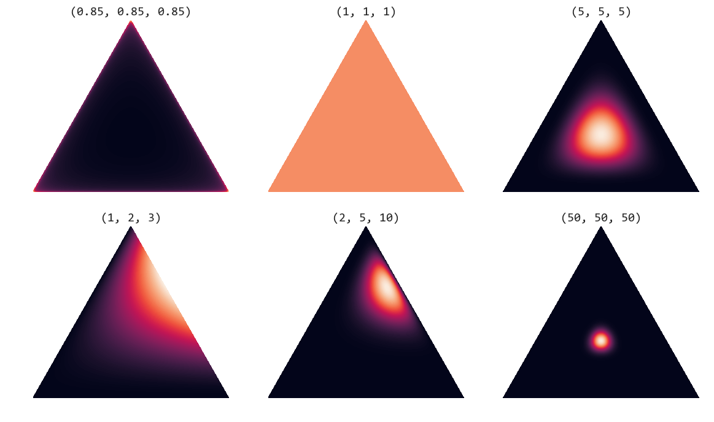
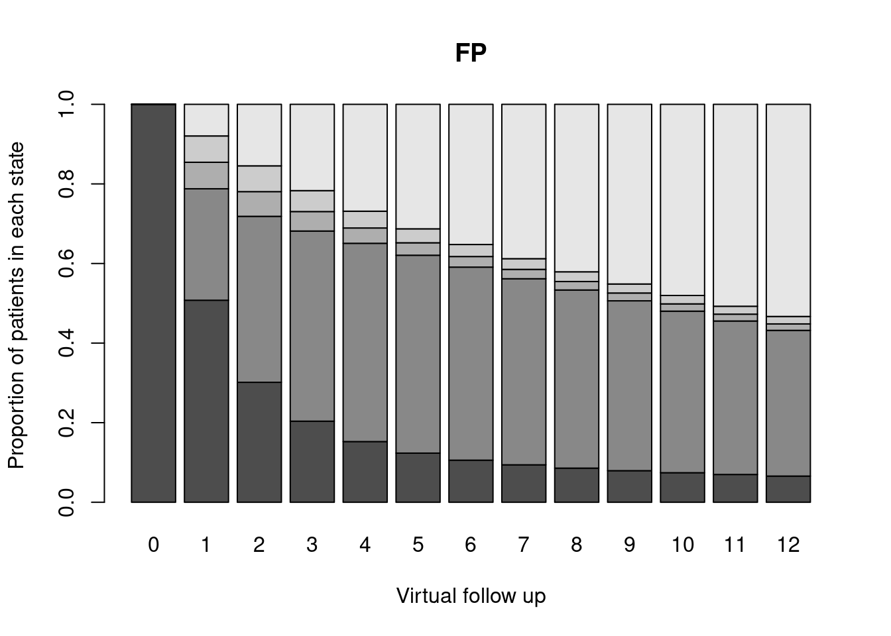
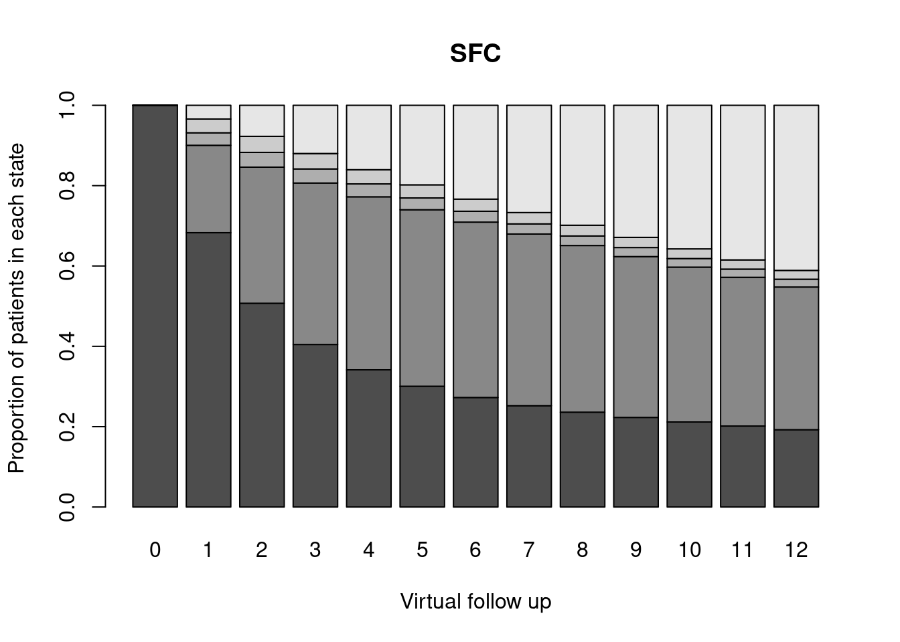

Cohort discrete Markov model
Wednesday, 22 June 2022
Instructions
The following exercise helps you run the Markov model and the underlying Bayesian model to estimate the transition probabilities in Rand BUGS. You should also look specifically at BMHE and actually run through the calculations to make sure you understand how the process works. In particular, look at the part relative to discounting and how you do that, which is very prevelent in real applied work.
Open the file
MarkovModel1.txtand inspect theBUGSmodel code. Make sure you understand the assumptions encoded in the model.Follow the script
MarkovModel1.R, which will guide you through the necessary steps to create the data, run the MCMC model and then perform the relevant economic analysis fromR.
Solutions
The R script guides you through the process of running the Markov model analysis for the asthma problem seen in the lecture.
The graphical representation of the Markov model for the ‘asthma’ problem discussed in section 5.4 of BMHE
The script first sets up the number of states \(S=5\) and the number of time points \(J=12\) weeks in the virtual follow up. Also, we load the data, given in the form of matrices with the observed transitions across the states, during the actual follow up in the trial. The code is relatively straightforward — we use the R command matrix to define the data. Notice that the numbers included in the matrix are read by row (as the command byrow=TRUE suggests).
S = 5
r.0 = (matrix(c(
66,32,0,0,2,
42,752,0,5,20,
0,4,0,1,0,
0,0,0,0,0,
0,0,0,0,156),c(S,S),byrow=TRUE))
r.0 [,1] [,2] [,3] [,4] [,5]
[1,] 66 32 0 0 2
[2,] 42 752 0 5 20
[3,] 0 4 0 1 0
[4,] 0 0 0 0 0
[5,] 0 0 0 0 156You can check that these tie up with the matrix presented in the lecture slides — notice that r.0 indicates the data for the control arm.
Perhaps more interestingly, the script also defines the prior distribution for the parameters \(\boldsymbol\lambda\) in terms of a Dirichlet distribution.
Click to view more details on the Dirichlet distribution
The Dirichlet distribution is a multivariate generalisation of the Beta. Specifically, where the Beta$(\alpha,\beta)$ is a good model for a single parameter ranging between 0 and 1, the Dirichlet can be used to model $S$ parameters $\lambda_1,\ldots,\lambda_S$ that are all constrained in the range $[0;1]$ and such that $\sum_{s=1}^S \lambda_s = 1$. This fits nicely the property that transition probabilites off a given state $s$ are **exhaustive and mutually exclusive**, meaning that all are between 0 and 1 and that they must sum to 1.
Like the Beta distribution is related to the Binomial sampling distribution, so the Dirichlet is to the multivariate generalisation of the Binomial, i.e. the Multinomial distribution. So, if our situation involves $S$ possible outcomes each of which occurs in $y_1,\ldots,y_S$ counts out of the total sample size $n$, we can model the sampling distribution as $y_1,\ldots,y_S \sim {\sf Multinomial}(\boldsymbol\lambda)$, where $\boldsymbol\lambda=(\lambda_1,\ldots,\lambda_S)$ is the vector of probabilities associated with each possible outcome.
Modelling $\boldsymbol\lambda \sim {\sf Dirichlet}(\boldsymbol{a})$ for a vector of parameters $\boldsymbol{a}=(a_1,\ldots,a_S)$ is the equivalent of the conjugated Beta-Binomial model — with the added benefit that the posterior distribution is also a Dirichlet: $$\boldsymbol\lambda\mid \boldsymbol{y}\sim {\sf Dirichlet}(a_1+y_1, \ldots, a_S+y_S).$$
In a Dirichlet distribution, the parameters $\boldsymbol{a}$ have a relatively intuitive interpretation, as they are proportional to the expected probability associated with the various outcomes. So if $a_S$ is very large in comparison to the other parameters $a_1,\ldots,a_{s-1},a_{s+1},\ldots,a_S$, then we are encoding the fact that outcome $s$ is much more likely to occur than the others. The scale of the parameters indicates the precision. So for example, a Dirichlet$(1,1,1)$ encodes the assumption that the three possible categories are all equally likely (because the underlying parameters $a_1,a_2,a_3$ are all the same). But in the same way, so would a Dirichlet$(100,100,100)$, or for that matter a Dirichlet$(0.01,0.01,0.01)$. In all cases the three parameters have the same value. The third distribution implies the lowest level of precision, while the second one implies large precision: intuitively, the larger the value, the more prior knowledge we consider.

The graph above shows four symplexes: each side of the triangles represent one of the Dirichlet parameters (in this case we assume an underlying variable with three possible categories). When $a_1=a_2=a_3=1$, the mass of points (representing simulations from the underlying Dirichlet distribution) is spread all over the area in the triangle. This is the equivalent of a vague prior where the probability mass is spread all over the range of the variable. Conversely, when $a_1=a_2=a_3=50$, the mass is concentrated in a small, central part of the triangle — intuitively, this means that the three dimensions carry the same weight (because the parameters have the same value); because that value is large, then the variance of the points is relatively low. When one of the dimensions has a much larger value than the others, the points tend to be pulled towards that area, as happens when we consider a Dirichlet$(2,5,10)$.
In this case, the “scale” parameter of the Dirichlet distribution is assumed to be \(\alpha_0=\alpha_1=10\). This assumption implies:
- We effectively assume the same prior distribution in both arms of the trial. \(\alpha_0\) governs the behaviour of the control arm, while \(\alpha_1\) is the parameter defining how the probabilities \(\lambda_1,\ldots,\lambda_S\) act in the treatment arm.
- We define
alpha.0 = alpha.1 = rep(scale, S); this implies that
scale=10
alpha.0 = alpha.1 = rep(scale,S)
alpha.1[1] 10 10 10 10 10i.e. that in the prior, each of the \(S=5\) categories (STW, UTW, Pex, Hex, TF) is assumed to have the same probability scale/ \(\sum_{s=1}^S\) scale. Intuitively, we specify our prior by imagining a “thought experiment” in which the sample size is \(\sum_{s=1}^S\) scale=50, in this case. This sample size is assumed in our prior to be distributed equally across the \(S=5\) states, so that we think that there are scale=10 individuals in each of the states. This is a relatively strong prior. For example, a Dirichlet(0.1,0,1,0.1,0.1,0.1) would indicate the same thought experiment with a sample size of just \(5\times 0.1=0.5\) individuals, of which \(0.1\) is allocated to each of the states.
Of course, there’s nothing special about this construction — in fact simply convenience. We may have thought about this problem much more carefully and determined that in fact we would expect, in the prior, more individuals to be in the STW state, say twice as many as in UTW, three times as many as in Pex, four times as many as in Hex and 10 times as many as in TF. This could translate, for example, into a Dirichlet(10,5,3.3,2.5,1) prior. If we felt very confident about this, we may even express our prior into a Dirichlet(1000,500,330,250,100) prior — i.e. with the same proportionality but much larger numbers, to imply bigger precision.
The script also proceeds to define the initial values. This is also interesting. We use the mathematical results whereby we can simulate from a Dirichlet distribution by first constructing independent Gamma variables and then rescaling the simulated values by their sum. In R, we create the inits function, in which we first simulate a matrix of Gamma(scale, 1) values using the command rgamma(4*S,scale,1); then we place the resulting vector of \(4\times S\) values into a matrix of dimension \(4\times S\), e.g. the object temp.0. Notice that because TF is assumed to be an absorbing state, by definition \(\boldsymbol\lambda_{S}=(0,0,0,0,1)\). Thus, we do not need to initialise this row of the matrix of parameters \(\boldsymbol\lambda\) and therefore, we only need a matrix of size \(4\times S\). Next, we create the variable sum.temp.0 in which we record the row totals of temp.0 and then construct the matrix mat.0 by rescaling temp.0 by these totals. Finally, we use the command list to store the named variables we want to output in the function inits, i.e. lambda.0 and lambda.1.
inits <- function(){
temp.0 <- matrix(rgamma(4*S,scale,1),4,S)
sum.temp.0 <- apply(temp.0,1,sum)
mat.0 <- temp.0/sum.temp.0
temp.1 <- matrix(rgamma(4*S,scale,1),4,S)
sum.temp.1 <- apply(temp.1,1,sum)
mat.1 <- temp.1/sum.temp.1
list(lambda.0=rbind(mat.0,rep(NA,S)),lambda.1=rbind(mat.1,rep(NA,S)))
}
inits()$lambda.0
[,1] [,2] [,3] [,4] [,5]
[1,] 0.2620049 0.1656849 0.1735277 0.1906087 0.2081738
[2,] 0.1721008 0.1694657 0.3168546 0.1709276 0.1706513
[3,] 0.2621914 0.2312971 0.2281732 0.1588414 0.1194969
[4,] 0.1646739 0.1817589 0.2073144 0.1667142 0.2795386
[5,] NA NA NA NA NA
$lambda.1
[,1] [,2] [,3] [,4] [,5]
[1,] 0.1258738 0.1952657 0.3466712 0.1115298 0.2206596
[2,] 0.1677436 0.1495265 0.2917020 0.2010646 0.1899634
[3,] 0.2207405 0.1171875 0.2113657 0.2074268 0.2432796
[4,] 0.1412204 0.1312841 0.2364687 0.1709408 0.3200860
[5,] NA NA NA NA NAOnce the BUGS model has run, we have estimates for the transition probabilities \(\boldsymbol\lambda\). Given these simulations, we can construct the Markov model “virtual” follow up, using the following code.
# Now run the Markov model from R
start <- c(1,0,0,0,0) # NB analysis for 1 single patient!
# (can create a "virtual" population of N individuals
# and allocate them across the states at time j=0)
# Markov transitions
m.0 <- m.1 <- array(NA,c(n.sims,S,(J+1)))
for (s in 1:S){
m.0[,s,1] <- start[s]
m.1[,s,1] <- start[s]
}
lam0=lam1=array(NA,c(n.sims,S,S))
for (i in 1:n.sims) {
lam0[i,,]=rbind(lambda.0[i,,],c(0,0,0,0,1))
lam1[i,,]=rbind(lambda.1[i,,],c(0,0,0,0,1))
for (j in 2:(J+1)){
for (s in 1:S){
# Use the new matrices lam0 and lam1 to do the matrix multiplication
m.0[i,s,j] <- sum(m.0[i,,j-1]*lam0[i,,s])
m.1[i,s,j] <- sum(m.1[i,,j-1]*lam1[i,,s])
}
}
}For simplicity, we run the MM for a single patient and we initialise the “cohort” so that the patient is in state \(s=1\) (STW) at the beginning of the follow up (\(j=0\)). There’s no special reason for this; we could have a larger size of the cohort (e.g. the sum of the vector start); or we may have a different initial distribution across the states.
Then we construct the arrays m.0 and m.1 in which we will store the total transitions in each state and for each time. We use the recursive relationship \(\boldsymbol{m}_{j+1}=\boldsymbol{m}_j \boldsymbol\Lambda_j\), where \(\boldsymbol\Lambda_j\) is the \(S\times S\) matrix storing the transition probabilities for all the states, at time \(j\). Notice that because the objects lambda.0 and lambda.1 are obtained as output from bugs, they are arrays where the first dimension is the number of simulations produced.
Notice that BUGS stores the simulations for the “random” part of the matrix \(\boldsymbol\Lambda_j\). In fact, because the last row (containing the transition probabilities off the absorbing state TF) is deterministically defined, BUGS doesn’t consider it a parameter. Thus, before we can apply the matrix multiplication, we need to construct a matrix, which we call lam0 and lam1 respectively for the control and active treatment arm, in the code above, in which we stack up the \(i-\) MCMC simulated values for the first \((S-1)\) rows of the transition probability matrix (estimating the transitions off the states STW, UTW, Pex and Hex) and a row vector of values \((0 0 0 0 1)\), which indicates that for the state TF, the only possible movement is to remain in it.
The rest of the script post-process the output of the Bayesian model to create a “Markov trace”, i.e. a barplot displaying the number/proportion of patients transitioning in each state at each time point. This is a useful graph, as it allows us to try and make sense of the underlying population dynamics that is implied by the Markov model we have constructed. In real-life applications, we would want to produce this graph and validate it with the help of the wider research team (including clinicians and experts of the subject matter).


In the above barplots, the darker bar indicates the proportion of individuals in STW and increasingly lighter colours indicate, respectively, the proportion of people in UTW, Pex, Hex and TF. As is possible to see, the active treatment (SFC) seems to be associated with a population dynamics in which more people tend to remain in the most favourable outcome (STW).
Finally, we define and apply discounting to the resulting costs and effects and then use BCEA to produce the economic analysis. The code is fairly straighforward. Firstly, we define the discount rate, set at 3.5% for both benefits and costs. Notice that this is the “standard” annual discount rate suggested by NICE. In this particular example, the virtual follow up is set at \(J=12\) weeks, so technically we don’t really need to discount the output (as 12 weeks is barely 4 months, let alone more than one year!). Then we fill in the elements of the vectors disc.b and disc.c with the discounted series of values.
## General formulation to apply discount
delta.b <- 0.035 # discount rate for benefits (3.5%)
delta.c <- 0.035 # discount rate for costs (3.5%)
# Defines the discount factors
disc.b <- numeric(); disc.c <- numeric()
disc.b[1] <- 1; disc.c[1] <- 1
for (j in 2:J) {
disc.b[j] <- (1+delta.b)^(j-1)
disc.c[j] <- (1+delta.c)^(j-1)
}
disc.b [1] 1.000000 1.035000 1.071225 1.108718 1.147523 1.187686 1.229255 1.272279
[9] 1.316809 1.362897 1.410599 1.459970Essentially, the discounted multiplier for time \(j=0\) is simply 1 (no discounting); at time \(j=1\) it is 1.035; and at the end of follow up is 1.45997.
Then, we actually apply these discounting multipliers to the estimated effects and costs.
disc.cost0 <- disc.eff0 <- disc.cost1 <- disc.eff1 <- matrix(NA,mm1$n.sims,J)
for (j in 1:J) {
disc.cost0[,j] <- cost0[,j]/disc.c[j]
disc.cost1[,j] <- cost1[,j]/disc.c[j]
disc.eff0[,j] <- m.0[,1,j]/disc.b[j]
disc.eff1[,j] <- m.1[,1,j]/disc.b[j]
}
# Shows difference between raw and discounted costs (for 1st simulation)
cost0[1,] [1] 100.23659 104.27436 89.77322 76.01900 66.42544 60.41060 56.81619
[8] 54.71874 53.50987 52.81776 52.42299 52.19835disc.cost0[1,] [1] 100.23659 100.74817 83.80426 68.56478 57.88594 50.86410 46.22001
[8] 43.00843 40.63601 38.75402 37.16364 35.75304As is possible to see, the raw costs are actually higher than the discounted counterparts (apart from the first element, for which the discounting multiplier is 1 and so, effectively, no discounting occurs).
At this point, we define the economic outcome as the sum of the discounted series of values for benefits and costs, over the \(J=12\) time points, using the following code.
# Sums the values across all time points and creates matrix of costs
c <- matrix(NA,n.sims,2)
c[,1] <- apply(cost0,1,sum)
c[,2] <- apply(cost1,1,sum)
# Effectiveness
e <- matrix(NA,n.sims,2)
e[,1] <- apply(m.0[,1,],1,sum)
e[,2] <- apply(m.1[,1,],1,sum)And to complete the analysis, we run BCEA
# Cost-effectiveness analysis
library(BCEA)
ints <- c("FP","SFC")
m <- bcea(e,c,ref=2,interventions=ints,Kmax=300)which can be used to summarise the economic model.
summary(m)NB: k (wtp) is defined in the interval [0 - 300]
Cost-effectiveness analysis summary
Reference intervention: SFC
Comparator intervention: FP
SFC dominates for all k in [0 - 300]
Analysis for willingness to pay parameter k = 300
Expected utility
FP -250.17
SFC 523.57
EIB CEAC ICER
SFC vs FP 773.74 0.9995 -94.31
Optimal intervention (max expected utility) for k = 300: SFC
EVPI 0.018456